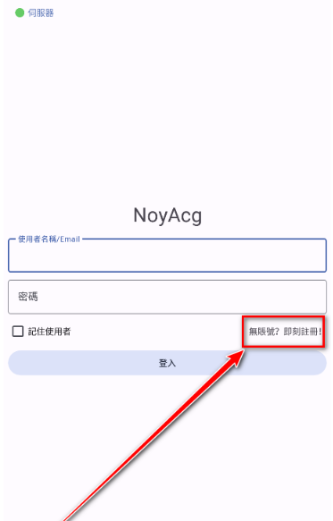

NoyAcg 这款漫画阅读 App 到底能玩多深？一次把它的能力面铺给你看
从离线缓存到社区话题，从账号同步到邀请码机制，深度盘点 NoyAcg 的完整能力域，帮你判断它是不是你下一个漫画阅读主力。
漫画阅读应用并不少见，从老牌的布卡漫画、漫画岛到后来的腾讯动漫、快看漫画，赛道上从来不缺玩家。但真正把「阅读」和「社区」两件事都做扎实的，屈指可数。NoyAcg 就是其中一个值得认真聊聊的选手——它既是一款能离线缓存、书架管理的纯阅读器，又内置了一个相对活跃的话题讨论社区，把"看漫画"这件事从单向消费变成了可以双向互动的体验。想深入了解的可以去它的官网看看。
应用本身可以从各大应用市场或官方渠道下载，也可以关注后续的更新动态获取新版本安装包。
一、核心阅读：离线先行，书架有序
对于漫画阅读器来说，最根本的体验是什么？翻页流畅、加载够快、省流量。NoyAcg 在这几点上的设计思路很明确——离线优先。
打开一部漫画，详情页下方就有「离线下载」按钮，点一下整部或者选定章节就进了本地缓存。缓存完成后，哪怕在地铁里信号全无、甚至完全断网，打开就能继续看。这个设计对通勤党来说几乎是刚需——我试过在早高峰的地铁里用它连续追完一整部中篇，全程没有任何卡顿或加载等待。
书架管理也做得不马虎。已缓存的漫画、正在追更的、标记为"想看"的，各自分组归类。书架界面可以按最近阅读时间排序，也可以手动调整顺序。对同时追十几部漫画的人来说，书架乱不乱直接影响追更体验的效率。

阅读界面本身的细节也花了心思。方向模式（竖翻/横翻/滚动）、字号大小、页面亮度这些常规选项一应俱全，而且设置过一次之后会记住每部漫画各自的偏好——不同漫画用不同翻页方式，不用每次切换。
二、社区互动：不止是漫画下面留个言
很多漫画应用的评论区其实很鸡肋——要么没人说话，要么就是"好看""求更新"这样的水帖。NoyAcg 不一样，它把社区做成了一个独立的功能模块，叫话题讨论区。
话题讨论区和传统的"漫画评论"是两套东西：评论只限在某一部漫画的页面下，而话题讨论区是一个开放论坛——你可以发起"最近有什么好看的国漫推荐？"这样的宽泛话题，也可以就某部漫画的结局展开深度讨论，甚至发起投票。每个话题可以加标签，比如#日漫推荐#、#热血少年#，方便分类检索和被感兴趣的人看到。
社区的运营思路也比较健康：有官方活动话题带节奏，有热门话题和最新话题两个榜单，还有关注功能——你对某个话题感兴趣，点一下关注，后面有新回复会收到通知，不用反复刷新。当然，社区氛围要靠大家维护，应用内置了内容审核机制，人身攻击、广告推广、剧透不预警都会被拦截。
除了话题讨论，每部漫画下面的评论区也保留了，支持回复、点赞、字数限制等常规功能。两套评论体系互补——想深入讨论去话题区，想吐槽某一话的剧情就直接在漫画下面留。
三、账号与多端：一个账号走天下
NoyAcg 的账号体系设计得比较轻量——不需要手机号，邮箱注册就行，也不需要强制邀请码。注册流程分几步：填邮箱和密码、做人机验证、收验证码邮件。全程不超过三分钟。具体的注册步骤文档里写得更详细，这里就不展开了。
登录后书架数据会自动同步到云端。我曾经在手机上注册，后来换了平板，登录同一个账号后书架里的几十部漫画、正在阅读的进度、甚至评论记录，全部原样恢复。多设备同时登录也没问题——在手机上离线缓存了一部漫画，在平板上登录同一个账号能看到缓存状态（但缓存文件本身不同步，这个要注意）。
邀请码机制目前已经是可选的了——早期可能有邀请注册的门槛，但现在可以不填直接注册。如果手里有老用户的邀请码，填进去双方可能各得一些积分奖励，但不强求。这点做得很务实，没有为了拉新而把注册流程搞复杂。
四、短板也要说清楚
盘点不能只说优点，NoyAcg 也有一些明显的局限：
社区功能可能因版本或地区受限。某些渠道分发的版本可能砍掉了社区入口，部分地区或开启青少年模式后社区会被屏蔽。如果发现应用里找不到话题讨论区，先检查是不是版本问题。
邀请码机制的存在感越来越弱。现在注册可以完全跳过邀请码，早期的积分奖励机制好像也没太多人用——如果你手里有个旧邀请码想用，可能会发现已经过期失效了。
社区服务器偶尔会有波动。漫画内容能正常加载但话题区打不开的情况偶尔会发生，一般等一会儿就恢复了。
离线缓存占空间。这不是 NoyAcg 独有的问题，但追得多了手机存储确实吃得消——书架管理里有批量删除缓存的功能，定期清一下比较好。
五、什么样的人该用它
说了这么多，NoyAcg 到底适合谁？大致三类：
重度漫画读者。如果你同时追十几部漫画、经常在通勤路上看、不想被广告打扰，NoyAcg 的离线缓存和干净的阅读器体验会非常适合你。省流量、翻页快、书架有序——这是它最扎实的基本盘。
喜欢讨论漫画的社区党。如果你不满足于看完就走，想和同好聊剧情、求推荐、参与投票，话题讨论区比单纯的评论区更有深度。标签系统和关注功能让社区的信息组织比散落在各漫画评论区里的碎片化讨论高效得多。
多设备用户。手机看不够、想在平板上接着看？一个账号搞定同步，书架、进度、评论记录全跟着你走。
总的来说，NoyAcg 不是那种靠花哨功能博眼球的应用——它的设计思路很朴素：把"看漫画"和"聊漫画"这两件事各自做好，然后用一个干净的账号体系把它们串起来。对正在寻找下一款漫画阅读主力的人来说，值得试试。这套资料在 GitHub、Gitee、GitCode 三个仓库都能找到，国内镜像访问起来也方便。